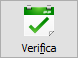
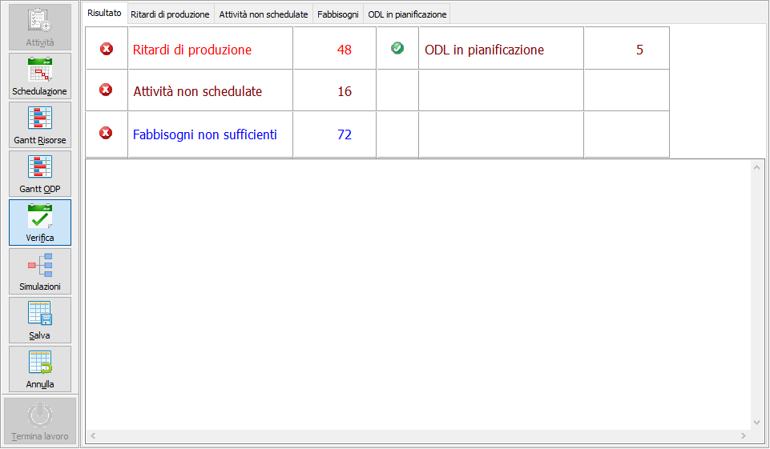
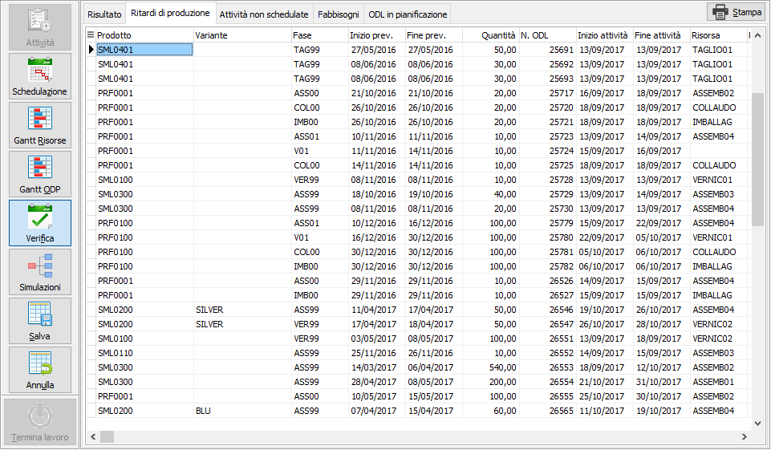
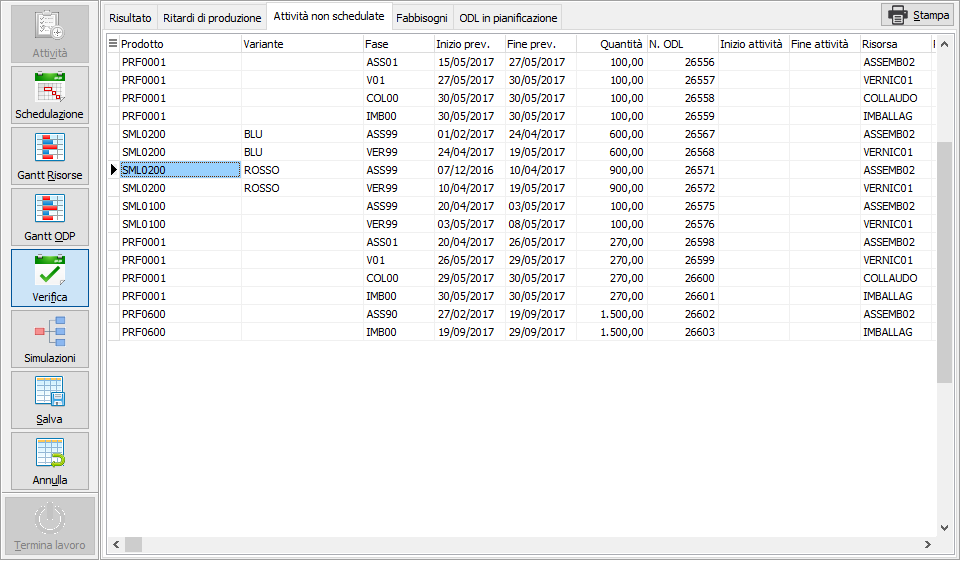
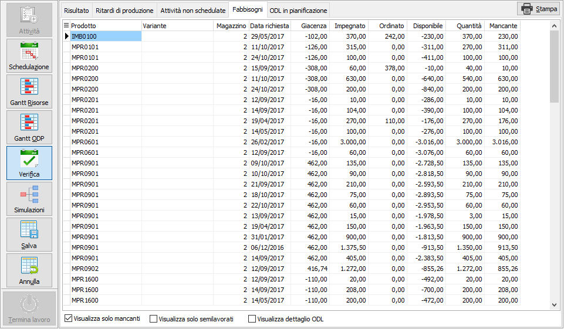
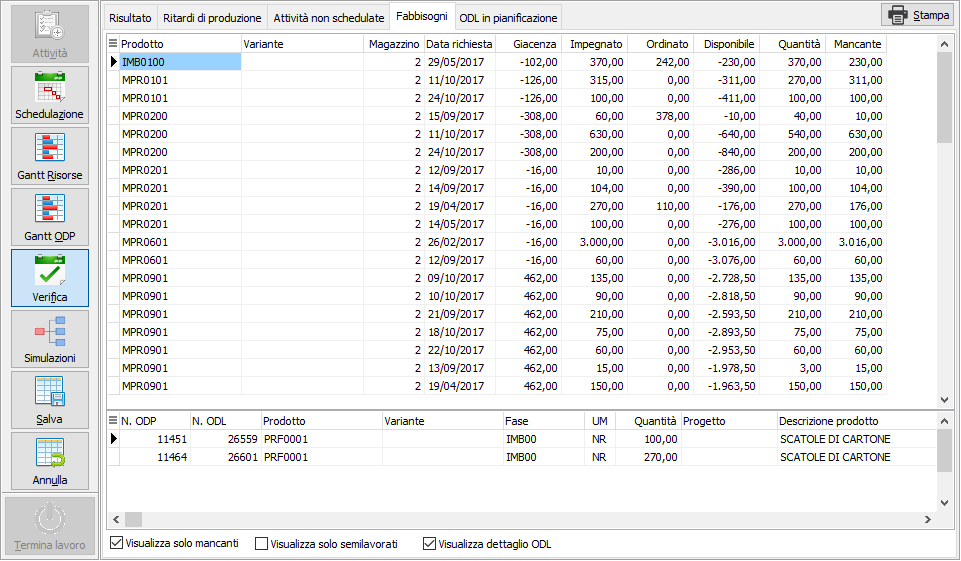
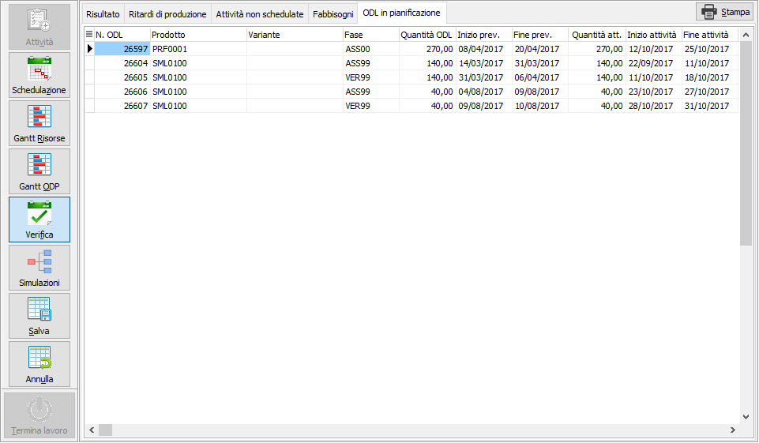

Verifica

Attraverso questa funzione è possibile eseguire la verifica del rispetto dei tempi e della sostenibilità dei componenti; il mancato rispetto dei vincoli non impedisce comunque il salvataggio della schedulazione.Al termine della verifica, che si esegue automaticamente appena premuto il pulsante, gli indicatori evidenziano le segnalazioni:
Ritardi di produzione: le attività sono in ritardo, l’inizio dell’attività è stata schedulata in una data successiva a quella prevista dal piano per l’ODL.
Attività non schedulate: l’attività non è stata schedulata in quanto non è stata trovata una risorsa disponibile sia nell’orizzonte di schedulazione, che nell’orizzonte successivo.
Fabbisogni non sufficienti: sono presenti fabbisogni mancanti in relazione alle attività schedulate.
Nel riquadro in basso possono comparire eventuali messaggi di errore; le pagine visualizzate sono relative alle segnalazioni presenti e potrebbero non essere tutte visibili.

La pagina Ritardi di produzione è visibile se sono stati riscontrate attività schedulate in ritardo rispetto alla data di inizio lavorazione prevista sul relativo ODL. I dati visualizzati possono essere esportati, tramite il clic destro del mouse sulla griglia, oppure stampati tramite il pulsante Stampa.

La pagina Attività non schedulate è visibile se sono stati riscontrate attività per cui non è stato possibile trovare una risorsa disponibile sia nell’orizzonte di schedulazione, che nell’orizzonte successivo; oppure perchè risorse non schedulabili relativi a fasi per cui non è stato specificato un tempo di attraversamento. I dati visualizzati possono essere esportati, tramite il clic destro del mouse sulla griglia, oppure stampati tramite il pulsante Stampa.

La pagina Fabbisogni è sempre visibile e riporta i fabbisogni relativi alle attività schedulate; in basso sono presenti due caselle di spunta, una per visualizzare solo i fabbisogni non coperti e l'altra per visualizzare solo gli eventuali semilavorati presenti che sono comunque evidenziati per distinguerli dalle materie prime. I dati visualizzati possono essere esportati, tramite il clic destro del mouse sulla griglia, oppure stampati tramite il pulsante Stampa.

Tramite il tasto destro del mouse sulla griglia dei fabbisogni è possibile richiamare l'analisi disponibilità del prodotto su cui siamo posizionati. Spuntando la casella "Visualizza dettaglio ODL" compare una sezione in basso che mostra i dati degli ODL a cui il fabbisogno si riferisce.

La pagina ODL in pianificazione è visibile se sono presenti nell'elaborazione della schedulazione ODL provvisori che, al momento del salvataggio della schedulazione, saranno pianificati. I dati visualizzati possono essere esportati, tramite il clic destro del mouse sulla griglia, oppure stampati tramite il pulsante Stampa.
